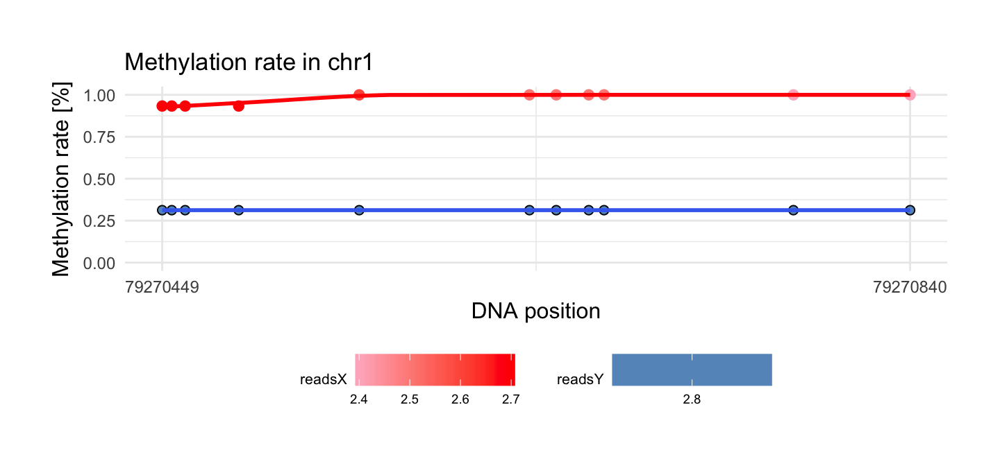

metR: step by step
Aleksandra Brodecka
2018-01-09
Introduction
The metR package contains tools for comprehensive analysis of data from methylation studies. With the metR one can define regions, get basic statistics about methylation in them, plot methylation rate or rank these regions from the most interesting to the least one.
devtools::install_github("geneticsMiNIng/metR")
library(metR)
library(kableExtra)
library(knitr)The data
Data for this example are downloaded from the site: http://www.neuroepigenomics.org/methylomedb/download.html. We used 4 control samples: Control1 AC, Control2 AC, Control3 AC and Control4 AC and 4 disease samples: SCZ1 AC, SCZ2 AC, SCZ3 AC, SCZ4 AC.
In the metR package these samples are available in the schizophrenia data frame. Each row is a single methylation probe. Data from all control/disease samples are combined together.
To speed up calculations and shrink down the size of data we are using only probes from chromosome 1. The R code needed to download data from all samples can be found in the script https://github.com/geneticsMiNIng/metR/blob/master/examples/prep.MethylomeDB.R. The result of this script is a single data.frame schizophrenia that is included in metR package. The last column category indicates if data are from control samples (‘control’) or from disease samples (‘disease’).
data('schizophrenia')
kable_styling(kable(head(schizophrenia, 6), "html"), position = "left",
font_size = 9, full_width = F) %>% row_spec(1:6, color = "black")| chr | poz | no | meth | unmeth | meth.rate | category |
|---|---|---|---|---|---|---|
| chr1 | 73465 | 6 | 1 | 5 | 0.1666667 | control |
| chr1 | 73467 | 6 | 1 | 5 | 0.1666667 | control |
| chr1 | 74406 | 10 | 5 | 5 | 0.5000000 | control |
| chr1 | 74873 | 10 | 5 | 5 | 0.5000000 | control |
| chr1 | 75268 | 10 | 5 | 5 | 0.5000000 | control |
| chr1 | 75390 | 10 | 5 | 5 | 0.5000000 | control |
1. Preprocessing
The data requires some preprocessing. This can be done with the preprocessing() function. In this function we only select data from two given data frames if methylation probe exists in both samples on the same chromosome and position.
control <- schizophrenia %>% filter(category == 'control') %>%
dplyr::select(-category)
disease <- schizophrenia %>% filter(category == 'disease') %>%
dplyr::select(-category)
processed_schizophrenia <- preprocessing(control, disease)
kable_styling(kable(head(processed_schizophrenia, 6), "html"), position = "left",
font_size = 9, full_width = F) %>% row_spec(1:6, color = "black")| chr | poz | prob | no | meth | unmeth | meth.rate |
|---|---|---|---|---|---|---|
| chr1 | 81412 | x | 35 | 29 | 6 | 0.8285714 |
| chr1 | 81412 | y | 76 | 66 | 10 | 0.8684211 |
| chr1 | 81442 | x | 35 | 29 | 6 | 0.8285714 |
| chr1 | 81442 | y | 76 | 66 | 10 | 0.8684211 |
| chr1 | 81546 | x | 35 | 29 | 6 | 0.8285714 |
| chr1 | 81546 | y | 76 | 66 | 10 | 0.8684211 |
The preprocessing() function need two probes with specific columns:
kable_styling(kable(head(control, 3), "html"), position = "left",
font_size = 9, full_width = F) %>% row_spec(1:3, color = "black")| chr | poz | no | meth | unmeth | meth.rate |
|---|---|---|---|---|---|
| chr1 | 73465 | 6 | 1 | 5 | 0.1666667 |
| chr1 | 73467 | 6 | 1 | 5 | 0.1666667 |
| chr1 | 74406 | 10 | 5 | 5 | 0.5000000 |
So:
chr - chromosome name
poz - position in chromosome
no - number of reads per position
meth - number of reads with methylated cytosine
unmeth - number of reads with unmethylated cytosine
meth.rate - ratio: meth/(meth + unmeth)
kable_styling(kable(head(processed_schizophrenia, 3), "html"), position = "left",
font_size = 9, full_width = F) %>% row_spec(1:3, color = "black") %>%
column_spec(3, background = "#f21a1a", color = 'white')| chr | poz | prob | no | meth | unmeth | meth.rate |
|---|---|---|---|---|---|---|
| chr1 | 81412 | x | 35 | 29 | 6 | 0.8285714 |
| chr1 | 81412 | y | 76 | 66 | 10 | 0.8684211 |
| chr1 | 81442 | x | 35 | 29 | 6 | 0.8285714 |
By preprocessing we get one data frame where we have both results of methylation in position and chromosome from control and disease samples. Prob columns indicates if data are from control samples (x), or from disease samples (y).
Tiles / regions
All statistics in the metR package are calculated for regions of DNA. Currently the metR package implements two functions that defines regions:
-
create_tiles_max_gap()creates list of regions rich in methylation probes. Regions are defined as probes spaced not farther thangaps.length, -
create_tiles_fixed_length()creates list of regions of fixed lengthtiles.length.
After regions creation they will be tested if there is significant difference between two probes in methylation rate.
tiles_schizophrenia <- create_tiles_max_gap(processed_schizophrenia, gaps.length = 100)Column tiles indicates id of region in chromosome:
kable_styling(kable(head(tiles_schizophrenia, 3), "html"), position = "left",
font_size = 9, full_width = F) %>% row_spec(1:3, color = "black") %>%
column_spec(9, background = "#f21a1a", color = 'white')| chr | poz | prob | no | meth | unmeth | meth.rate | tiles | |
|---|---|---|---|---|---|---|---|---|
| chr1.1 | chr1 | 81412 | x | 35 | 29 | 6 | 0.8285714 | 1 |
| chr1.2 | chr1 | 81412 | y | 76 | 66 | 10 | 0.8684211 | 1 |
| chr1.3 | chr1 | 81442 | x | 35 | 29 | 6 | 0.8285714 | 1 |
It’s also possible to use create_tiles_fixed_length function, where tiles.length that specifies maximum difference between minimum and maximum position in the same methylation regions. If common = TRUE function creates second regions group that are min position is (min position + max position)/2 of k-region and max position is (min position + max position) of k+1 region.
tiles_schizophrenia_2 <- create_tiles_fixed_length(processed_schizophrenia, tiles.length = 1000, common = F)
tiles_schizophrenia_3 <- create_tiles_fixed_length(processed_schizophrenia, tiles.length = 1000, common = T)In output from create_tiles_fixed_length function column tiles also indicates id of region in chromosome and tiles.common indicates second group id region:
kable_styling(kable(head(tiles_schizophrenia_2, 3), "html"), position = "left",
font_size = 9, full_width = F) %>% row_spec(1:3, color = "black") %>%
column_spec(8, background = "#f21a1a", color = 'white')| chr | poz | prob | no | meth | unmeth | meth.rate | tiles |
|---|---|---|---|---|---|---|---|
| chr1 | 81412 | x | 35 | 29 | 6 | 0.8285714 | 81 |
| chr1 | 81412 | y | 76 | 66 | 10 | 0.8684211 | 81 |
| chr1 | 81442 | x | 35 | 29 | 6 | 0.8285714 | 81 |
kable_styling(kable(head(tiles_schizophrenia_3, 3), "html"), position = "left",
font_size = 9, full_width = F) %>% row_spec(1:3, color = "black") %>%
column_spec(8:9, background = "#f21a1a", color = 'white')| chr | poz | prob | no | meth | unmeth | meth.rate | tiles | tiles.common |
|---|---|---|---|---|---|---|---|---|
| chr1 | 81412 | x | 35 | 29 | 6 | 0.8285714 | 81 | 81 |
| chr1 | 81412 | y | 76 | 66 | 10 | 0.8684211 | 81 | 81 |
| chr1 | 81442 | x | 35 | 29 | 6 | 0.8285714 | 81 | 81 |
Basic statistics
We get basic statistics about two probes by get_stats function. This is helpful if we want check coverage of created regions or methylation difference.
stats <- get_stats(tiles_schizophrenia)
kable_styling(kable(head(stats, 3), "html"), position = "left",
font_size = 9) %>% row_spec(1:3, color = "black") | chr | start | end | meth.cov | meth.max_x | meth.max_y | meth.mean_x | meth.mean_y | meth.min_x | meth.min_y | meth.sd_x | meth.sd_y | meth.diff | quantile |
|---|---|---|---|---|---|---|---|---|---|---|---|---|---|
| chr1 | 81412 | 81442 | 2 | 0.8285714 | 0.8684211 | 0.8285714 | 0.8684211 | 0.8285714 | 0.8684211 | 0 | 0 | 0.0398496 | 0.4672649 |
| chr1 | 81546 | 81546 | 1 | 0.8285714 | 0.8684211 | 0.8285714 | 0.8684211 | 0.8285714 | 0.8684211 | NA | NA | 0.0398496 | 0.4051596 |
| chr1 | 81698 | 81863 | 4 | 0.8285714 | 0.8684211 | 0.8285714 | 0.8684211 | 0.8285714 | 0.8684211 | 0 | 0 | 0.0398496 | 0.5333629 |
We get basic statistics about each region:
minimum and maximum position (start and end columns)
min, max, std of methylation.rate in each probe (_x from control sample and _y from disease sample)
meth.diff - absolute difference between mean of methylation rate in control and disease sample
quantile - rank function based on quantile regression which uses information about number of observations in region.
We also can join e.g stats and tiles_schizophrenia on chromosome, start and end column and analyzing regions only if they coverage is greater than some specific values or other condition.
Finding DMR
We get interesting regions by using find_DMR function. Data argument is data.frame from create_tiles_fixed_length function or from create_tiles_max_gap function . In methods argument we can type methods which we want to use:
We use 8 methods which are available in metR package:
In following method are compared methylation rate between x and y prob on the same position and chromosome. These methods sorts regions based on p.value from adequate test results:
Ttest- t-test with unequal variance with null hypothesis that mean of methylation rate is equal in two probes.Wilcoxon- Wilcoxon signed test with null hypothesis that median of methylation rate is equal in two probes.KS- Kolmogorov-Smirnov test with null hypothesis that distribution of methylation rate is equal in two probes. We use two sided alternative hypothesis.
In Ttest, Wilcoxon and KS test we use two sided alternative hypothesis.
We also implemented regression methods, where number of success are number of methylated citosines and failures are number of unmethylated citosines. Output from this methods is beta coefficient of indicator variable from regression model and criticial value from Wald test on indicator variable. Indicator variable is equal 1 if observations are from x prob and 0 otherwise.
Reg.Log- standard logistic regression where explantatory variables are positions of chromosome and indicator if observations are from x prob.Reg.Mixed- logistic regression with random effects. In this method explantatory variable is only indicator if observations are from x prob and positions of chromosome are random effects.Reg.Corr.Mixed- logistic regression with random effects with given correlation matrix. In this method explantatory variable is only indicator if observations are from x prob and positions of chromosome are random effects. Correlation matrix between position is previously estimated and included inmetRpackage.
Methods Reg.Log.Beta, Reg.Mixed.Beta, Reg.Corr.Mixed.Beta order regions based on beta coefficients of grouping variable or p.values of grouping variable.
# eval = F
result <- find_DMR(tiles_schizophrenia, methods = c('Wilcoxon', 'Ttest', 'KS', 'Reg.Log', 'Reg.Mixed', 'Reg.Corr.Mixed'))Results of running function above are included in package. So now we only load data:
data('find.DMR.results')
names(find.DMR.results)## [1] "Wilcoxon" "Ttest" "KS" "Reg.Log"
## [5] "Reg.Mixed" "Reg.Corr.Mixed"This is a list of data.frames. One data.frame is result of running specific methods. If we want also get results from sorting by beta coefficient we can run:
find.DMR.results <- find_DMR(tiles_schizophrenia, methods = c('Reg.Log', 'Reg.Corr.Mixed', 'Reg.Corr.Mixed')
, p.value.log.reg = 0.001, p.value.reg.mixed = 0.001, p.value.reg.corr.mixed = 0.001)It’s better when we use results previously obtained from sorting by p.value of grouping variable because we can spare computing time:
find.DMR.results$Reg.Log.Beta <- find.DMR.results$Reg.Log %>% filter(p.value < 0.001) %>% arrange(-abs(beta.coef))
find.DMR.results$Reg.Mixed.Beta <- find.DMR.results$Reg.Mixed %>% filter(p.value < 0.001) %>% arrange(-abs(beta.coef))
find.DMR.results$Reg.Corr.Mixed.Beta <- find.DMR.results$Reg.Corr.Mixed %>% filter(p.value < 0.001) %>% arrange(-abs(beta.coef))Now we can select top 100 regions by each method using get_top function:
top <- do.call(gdata::combine,lapply(find.DMR.results, get_top, n = 100, stats = stats))Plotting methylation
We use draw_methylation function with basic arguments:
data - data.frame from
preprocessingfunction or data.frame fromcreate_tiles_max_gaporcreate_tiles_fixed_lengthfunctionschr - chromosome name of region that will be plotted
start - min position of region that will be plotted
end - max position of region that will be plotted
i = which.max(top$quantile)
draw_methylation(processed_schizophrenia, top$chr[i], top$start[i], top$end[i], bind.probes = F,
size.x.dot = 3.5, size.y.dot = 2, plot.title = 13, axis.title.x = 12, axis.title.y = 12, legend.position = 'none',
axis.text.x = 9, axis.text.y = 9)
Change legend.position to get legend of logarithm reads in each position:
draw_methylation(processed_schizophrenia, top$chr[i], top$start[i], top$end[i], bind.probes = F,
size.x.dot = 3.5, size.y.dot = 2, plot.title = 13, axis.title.x = 12, axis.title.y = 12, legend.position = 'bottom',
axis.text.x = 9, axis.text.y = 9, legend.text = 7, legend.title = 8)
Change bind.probes to TRUE argument if you want binding each observations between two probes:
draw_methylation(processed_schizophrenia, top$chr[i], top$start[i], top$end[i], bind.probes = T,
smooth.methylation = T,
size.x.dot = 3.5, size.y.dot = 2, plot.title = 13, axis.title.x = 12, axis.title.y = 12, legend.position = 'none',
axis.text.x = 9, axis.text.y = 9)Change smooth.methylation to FALSE if you don’t want smoothing observations:
draw_methylation(processed_schizophrenia, top$chr[i], top$start[i], top$end[i], bind.probes = T,smooth.methylation = F,
size.x.dot = 3.5, size.y.dot = 2, plot.title = 13, axis.title.x = 12, axis.title.y = 12, legend.position = 'none',
axis.text.x = 9, axis.text.y = 9)Other arguments are responsible for size of element on plots.
Session info
devtools::session_info()## Session info -------------------------------------------------------------## setting value
## version R version 3.4.3 (2017-11-30)
## system x86_64, linux-gnu
## ui X11
## language pl_PL
## collate pl_PL.UTF-8
## tz Poland
## date 2018-01-09## Packages -----------------------------------------------------------------## package * version date source
## assertthat 0.2.0 2017-04-11 cran (@0.2.0)
## backports 1.1.1 2017-09-25 cran (@1.1.1)
## base * 3.4.3 2017-12-01 local
## bindr 0.1 2016-11-13 cran (@0.1)
## bindrcpp * 0.2 2017-06-17 cran (@0.2)
## colorspace 1.3-2 2016-12-14 cran (@1.3-2)
## compiler 3.4.3 2017-12-01 local
## datasets * 3.4.3 2017-12-01 local
## devtools 1.13.3 2017-08-02 CRAN (R 3.2.3)
## digest 0.6.13 2017-12-14 cran (@0.6.13)
## dplyr * 0.7.4 2017-09-28 cran (@0.7.4)
## evaluate 0.10.1 2017-06-24 cran (@0.10.1)
## gdata 2.18.0 2017-06-06 CRAN (R 3.4.2)
## ggplot2 * 2.2.1 2016-12-30 cran (@2.2.1)
## glue 1.1.1 2017-06-21 cran (@1.1.1)
## graphics * 3.4.3 2017-12-01 local
## grDevices * 3.4.3 2017-12-01 local
## grid 3.4.3 2017-12-01 local
## gtable 0.2.0 2016-02-26 cran (@0.2.0)
## gtools 3.5.0 2015-05-29 CRAN (R 3.4.2)
## highr 0.6 2016-05-09 cran (@0.6)
## hms 0.3 2016-11-22 cran (@0.3)
## htmltools 0.3.6 2017-04-28 cran (@0.3.6)
## httr 1.3.1 2017-08-20 CRAN (R 3.4.3)
## kableExtra * 0.6.1 2017-11-01 CRAN (R 3.4.2)
## knitr * 1.17 2017-08-10 cran (@1.17)
## labeling 0.3 2014-08-23 cran (@0.3)
## lattice 0.20-35 2017-03-25 CRAN (R 3.3.3)
## lazyeval 0.2.1 2017-10-29 cran (@0.2.1)
## lme4 * 1.1-15 2017-12-21 cran (@1.1-15)
## magrittr * 1.5 2014-11-22 cran (@1.5)
## MASS * 7.3-48 2017-12-24 CRAN (R 3.4.3)
## Matrix * 1.2-11 2017-08-16 CRAN (R 3.4.1)
## memoise 1.1.0 2017-04-21 CRAN (R 3.2.3)
## methods * 3.4.3 2017-12-01 local
## metR * 0.1.0 2018-01-09 local
## minqa 1.2.4 2014-10-09 cran (@1.2.4)
## munsell 0.4.3 2016-02-13 cran (@0.4.3)
## nlme * 3.1-131 2017-02-06 CRAN (R 3.4.0)
## nloptr 1.0.4 2017-08-22 cran (@1.0.4)
## pkgconfig 2.0.1 2017-03-21 cran (@2.0.1)
## plyr 1.8.4 2016-06-08 cran (@1.8.4)
## purrr 0.2.4 2017-10-18 cran (@0.2.4)
## R6 2.2.2 2017-06-17 CRAN (R 3.2.3)
## Rcpp 0.12.13 2017-09-28 cran (@0.12.13)
## readr 1.1.1 2017-05-16 cran (@1.1.1)
## rlang 0.1.4 2017-11-05 cran (@0.1.4)
## rmarkdown 1.8 2017-11-17 cran (@1.8)
## rprojroot 1.2 2017-01-16 cran (@1.2)
## rvest 0.3.2 2016-06-17 CRAN (R 3.4.2)
## scales 0.5.0 2017-08-24 cran (@0.5.0)
## splines 3.4.3 2017-12-01 local
## stats * 3.4.3 2017-12-01 local
## stringi 1.1.5 2017-04-07 cran (@1.1.5)
## stringr 1.2.0 2017-02-18 cran (@1.2.0)
## tibble 1.3.4 2017-08-22 cran (@1.3.4)
## tidyr * 0.7.2 2017-10-16 cran (@0.7.2)
## tidyselect 0.2.2 2017-10-10 cran (@0.2.2)
## tools 3.4.3 2017-12-01 local
## utils * 3.4.3 2017-12-01 local
## viridisLite 0.2.0 2017-03-24 cran (@0.2.0)
## withr 2.1.0 2017-11-01 cran (@2.1.0)
## xml2 1.1.1 2017-01-24 CRAN (R 3.4.2)
## yaml 2.1.15 2017-12-01 cran (@2.1.15)